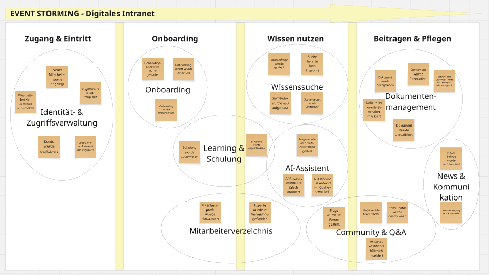
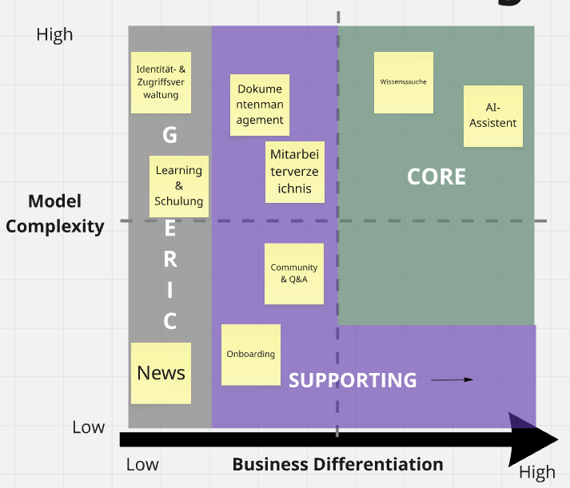

DDD — Domain-Driven Design
Präsenzaufgabe zur Lerneinheit OOD, Kapitel 6.5
Themengebiet: Digitales Intranet / Wissensplattform für eine mittelständische Organisation (branchenneutral). Vier DDD-Artefakte, in Miro gestaltet und hier dokumentiert.
1. Event Storming
Zur Identifikation der Domains wurden 30 Domain-Events (Vergangenheitsform) gesammelt, entlang von vier zeitlichen Phasen sortiert und anschließend zu Domains geclustert. Methodik nach Alberto Brandolini.

Die vollständige Event-Liste liegt im Repo: event-storming.md.
Gefundene Domains:
- Identitäts- & Zugriffsverwaltung
- Onboarding
- Learning & Schulung
- Mitarbeiterverzeichnis
- Wissenssuche & Retrieval
- AI-Assistent
- Community & Q&A
- Dokumentenmanagement
- News & Kommunikation
2. Core Domain Chart
Die neun Domains wurden nach Business Differentiation (X) und Model Complexity (Y) eingeordnet. Kerngeschäft einer Wissensplattform ist die intelligente Suche und der AI-Assistent — diese gehören in den Core und sind selbst zu bauen; Standardfunktionen gehören in den Generic-Bereich.

| Domain | Zone | Begründung |
|---|---|---|
| Wissenssuche & Retrieval | Core | Alleinstellungsmerkmal — semantische Suche, Ranking |
| AI-Assistent | Core | RAG und Antwortgenerierung; "High AI Field" |
| Dokumentenmanagement | Supporting | notwendig, kein Differenzierungsmerkmal |
| Community & Q&A | Supporting | organisationsspezifisch, kein USP |
| Mitarbeiterverzeichnis | Supporting | Experten-Matching mit fachlicher Tiefe |
| Onboarding | Supporting | firmenspezifisch, aber simpel |
| Identitäts- & Zugriffsverwaltung | Generic | Standardproblem — Entra ID / Keycloak |
| News & Kommunikation | Generic | Standard-Feed |
| Learning & Schulung | Generic | LMS als fertiges Produkt verfügbar |
3. Domain Mapping
Beziehungen zwischen den neun Domains, benannt mit den DDD-Context-Mapping-Patterns. Die Auswahl deckt sieben Pattern-Typen ab: Open Host Service, Published Language, Conformist, Customer/Supplier, Anticorruption Layer, Shared Kernel und Partnership.

| Beziehung | Pattern |
|---|---|
| Identitäts- & Zugriffsverwaltung → alle | Open Host Service + Published Language |
| Onboarding → IAM | Conformist |
| Dokumentenmanagement → Wissenssuche | Customer/Supplier + Anticorruption Layer |
| Wissenssuche ↔ AI-Assistent | Shared Kernel |
| Community & Q&A → Wissenssuche | Customer/Supplier |
| Mitarbeiterverzeichnis → Wissenssuche | Customer/Supplier |
| Onboarding ↔ Learning & Schulung | Partnership |
| Onboarding → Mitarbeiterverzeichnis | Customer/Supplier |
| alle → News & Kommunikation | Open Host Service |
4. Bounded Context Canvas
folgt